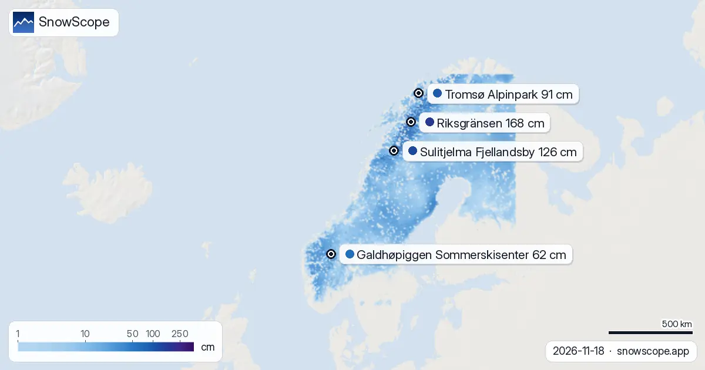

Norway vs Finland: 89 % white against 55 %
89 % of the mapped high ground is white in Norway, against 55 % in Finland. The deepest resort in Norway has 55 cm; in Finland it is Kallin with 26 cm.
See the live snow forecast for Riksgränsen in the SnowScope appSnow depth, powder alerts and the 3D map, free.
Across the border
For a trip near the border this decides the direction: the snow is not where the map of borders would suggest, it is where the last storm went.
The white area in Norway stands at about 249,960 km² today, 8,720 km² more than yesterday. Roughly 89 % of the country's mapped mountains and hills are covered.
| Country | White | Deepest resort | Next 7 days |
|---|---|---|---|
| Norway | 89 % | Riksgränsen | 38 cm |
| Sweden | 83 % | Björkliden | 15 cm |
| Finland | 55 % | Kallin | 13 cm |

The neighbours today
For comparison, the neighbours on the same day: Sweden: 83 % white, deepest Björkliden with 140 cm, up to 15 cm in the week ahead; Finland: 55 % white, deepest Kallin with 26 cm, up to 13 cm in the week ahead.

Best resorts right now
At the top of the list, Riksgränsen reports 168 cm.
Then come Sulitjelma Fjellandsby (126 cm), Tromsø Alpinpark (91 cm), Galdhøpiggen Sommerskisenter (62 cm) and Steilia (60 cm).
Riksgränsen picked up 1 cm in the last three days and could add 3 cm by Saturday 21 November.
Sulitjelma Fjellandsby picked up 6 cm in the last three days and could add 2 cm by Saturday 21 November.
142 of the 155 resorts we follow in Norway have snow on their upper slopes.
The rest of the shortlist: Tromsø Alpinpark: 91 cm on top, 9 cm in three days, 12 cm expected; Galdhøpiggen Sommerskisenter: 62 cm on top, 0 cm in three days, 6 cm expected; Steilia: 60 cm on top, 2 cm in three days, 3 cm expected.
Forecast for the week
Over the next three days up to 29 cm is expected, and up to 38 cm over the week.
The snowiest day looks like Saturday 21 November, with up to 15 cm in the snowiest spots.
The second week adds up to 30 cm where it snows most.
Seven days of snow cover
Day by day, the white area in Norway went: 16 November 246,310 km²; 17 November 246,210 km²; 18 November 249,960 km².
Riksgränsen has been the deepest resort every day this week.
From the valleys to the summits
Average depth of the snowpack by height band: 0-500 m: on average 8 cm (80 % of the ground white); 500-1,000 m: on average 18 cm (96 % of the ground white); 1,000-1,500 m: on average 24 cm (100 % of the ground white); 1,500-2,000 m: on average 29 cm (100 % of the ground white); 2,000-2,500 m: on average 41 cm (100 % of the ground white).
How much of the country is white
A week ago it was 220,860 km², so the cover has grown by 29,100 km². Snow lies right down to the lowlands and the coast.
New snow in the last three days
Three-day totals peak at 15 cm, around the Lyngen Alps.
The last 24 hours alone brought up to 7 cm.
At least 5 cm fell over some 76,570 km².
How this start compares
Here is how the deepest resorts compare with their usual 18 November: Riksgränsen: 55 cm at about 708 m, against 59 cm in a normal year; Sulitjelma Fjellandsby: 49 cm at about 465 m, against 52 cm in a normal year; Tromsø Alpinpark: 17 cm at about 222 m, against 37 cm in a normal year; Galdhøpiggen Sommerskisenter: 31 cm at about 2,015 m, against 83 cm in a normal year.
0 of these 4 resorts are above their usual depth for the date.
These depths are for one height on each mountain, below the top, so they read lower than the upper-slope numbers further down.
In past winters the best snow at Riksgränsen usually came early April / mid-April.
Planning a day on the snow
Above 0 m the ground is almost fully white (80 % covered), so runs up there have a continuous base.
If you can choose the day, go after Saturday 21 November: the fresh snow then has time to settle and the roads to be cleared.
What it means on the slopes
Fresh snow on top of the base means soft turns on the upper slopes, while the lower runs stay patchy.
With more snow in the forecast, the next days should improve things further.
Tips for skiers
- Snow above the tree line can be wind-packed: watch the ridges.
- Read the local avalanche bulletin before going off-piste.
- Early-season snow is thin over rocks: ski the groomed runs first.
About these numbers
Resort snow depths are the deepest snow on the resort's upper slopes from the SnowScope snow model (about 1 km, run of 18 November); they are estimates for an area, not a measurement at one point. Station values are measurements on the date shown. Forecasts can change. Always read the official avalanche bulletin before going off-piste.
Cite this report
For research, teaching or the press: the numbers and charts are free to reuse under CC BY 4.0 with this citation.
SnowScope (2026), Norway vs Finland: 89 % white against 55 %, https://snowscope.app/blog/en/2026/11/norway-snow-vs-neighbours-18-november-2026.html, accessed 2026-11-18
SnowScope (Atlas Labs). (2026, November 18). Norway vs Finland: 89 % white against 55 %. SnowScope snow reports. https://snowscope.app/blog/en/2026/11/norway-snow-vs-neighbours-18-november-2026.html
BibTeX
@misc{snowscope2026norwaysnowvsneighbours18,
author = {{SnowScope (Atlas Labs)}},
title = {Norway vs Finland: 89 % white against 55 %},
year = {2026},
month = nov,
howpublished = {\url{https://snowscope.app/blog/en/2026/11/norway-snow-vs-neighbours-18-november-2026.html}},
note = {Published 2026-11-18 12:11 UTC; accessed 2026-11-18}
}· CC BY 4.0 · Methods, data and tools →
Riksgränsen: snow and temperature by height, this winter vs last (tools) →
Follow Riksgränsen
Free: a message when fresh snow is coming, and the forecast every morning.
More snow reports

Austria has snow across 56 percent of measured terrain on 21 November, far ahead of Germany at 7 percent. Vorarlberg received 47 cm in three days.

Pick a region, dates, budget and what matters; get every resort ranked with the likely snow at the start, the pass, hotel and food per person, chalets to book, and a game mode.

Snow is falling on Slovenia's ski mountains today: about 37 cm on Kanin and 21 cm on Krvavec. Where the snow lies, how it compares with past winters, and the next snowy day.